Voce
Mündliche Prüfungen und Referate in den modernen Fremdsprachen am bayerischen Gymnasium – alles, was du zum Arbeiten brauchst.
1Erste Schritte
1.1Schnellstart in fünf Schritten
Voce begleitet große mündliche Leistungsnachweise und Referate in den modernen Fremdsprachen von der Klassenliste bis zum fertigen Bewertungsbogen: Gruppen und Zeitplan, Prüfungskarten, Bewerten nach den ISB-Rastern während der Prüfung, Worturteil, Bewertungsbögen in Word und eine Übersicht für die Fachschaft.
- Klasse anlegenListe als PDF, Excel oder Text einlesen.
- Prüfung anlegenRaster und Notenschlüssel schlägt Voce vor.
- Gruppen & PlanEinteilen, Pausen setzen, Plan drucken.
- BewertenPunkte antippen – Note und Worturteil entstehen mit.
- BögenAlle Bewertungsbögen als Word speichern.
Jeder Schritt ist in den folgenden Kapiteln genau beschrieben. Bei jeder Prüfung zeigt Voce in der Leiste, welcher Schritt erledigt ist.
1.2Überblick: Start, Leiste, Archiv
Beim ersten Start legt Voce eine Beispielprüfung mit erfundenen Namen an und zeigt auf „Start“ eine kurze Begrüßung mit den vier Schritten; Ausblenden blendet sie aus. Die Beispielprüfung löschst du unter Prüfung bearbeiten.
Start zeigt, was als Nächstes ansteht und was bei jeder Prüfung noch fehlt (Gruppen, Aufgaben, Bewertung). Ein Klick führt direkt zum nächsten Schritt.
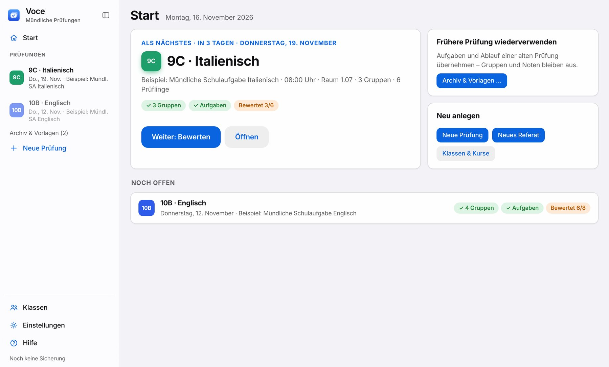
Die Leiste links enthält:
- oben deine Prüfungen nach Datum,
- direkt unter der gewählten Prüfung ihre vier Schritte Gruppen & Plan · Aufgaben · Bewerten · Ergebnisse & Bögen mit ihrem Stand (✓ erledigt, „6/8“ bewertet) und Prüfung bearbeiten,
- unten Klassen, Einstellungen, Hilfe und den Sicherungsstand.
Ein Klick auf eine andere Prüfung klappt deren Schritte auf. Das Symbol oben in der Leiste klappt die Leiste ein. Beim Bewerten klappt sie von selbst ein, damit die Prüflinge nebeneinander Platz haben.
Archiv & Vorlagen
Die Leiste zeigt die kommenden und die Prüfungen der letzten zwei Wochen. Alle älteren findest du unter Archiv & Vorlagen: mit Suche und Filtern nach Jahrgangsstufe, Fach und Schuljahr.
Als Vorlage legt eine neue Prüfung mit den Aufgaben und dem Ablauf der alten an. Gruppen und Noten übernimmt Voce nicht; Klasse und Termin wählst du neu. Prüfungen werden nie automatisch gelöscht.
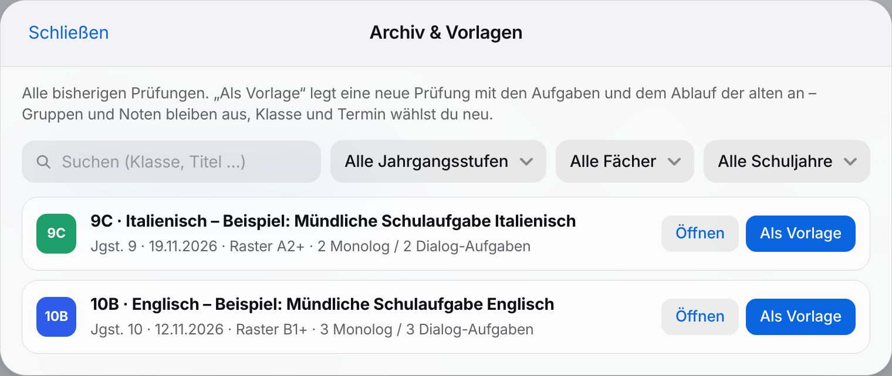
1.3Klassen
In der Leiste unten Klassen wählen, dann Klasse hinzufügen.
- Liste einlesen: Datei auswählen… oder die Datei in das Feld ziehen. Voce liest PDF (z. B. Klassen- oder Kursliste aus der ASV), Excel und CSV. Namen lassen sich auch über Text einfügen… hineinkopieren.
- Prüfen: Die erkannten Namen erscheinen als Liste; den Klassennamen übernimmt Voce nach Möglichkeit automatisch.
- w/m ergänzen: Fehlt die Angabe (häufig bei Kurslisten der Oberstufe), steht ein orangefarbenes ?. Antippen wechselt w → m → d. Schneller geht es, wenn du ins erste Feld klickst und nacheinander w oder m tippst; der Cursor springt weiter. Mit w/m schreibt das Worturteil „sie/er“, sonst den Vornamen.
- Anpassen: Namen direkt ändern, mit ✕ löschen, über + Gastschüler/in ergänzen. Wer länger fehlt, bekommt „dabei“ ausgeschaltet. Die Person bleibt gespeichert, erscheint aber nicht bei Gruppen und Bewertung.
- Sichern.
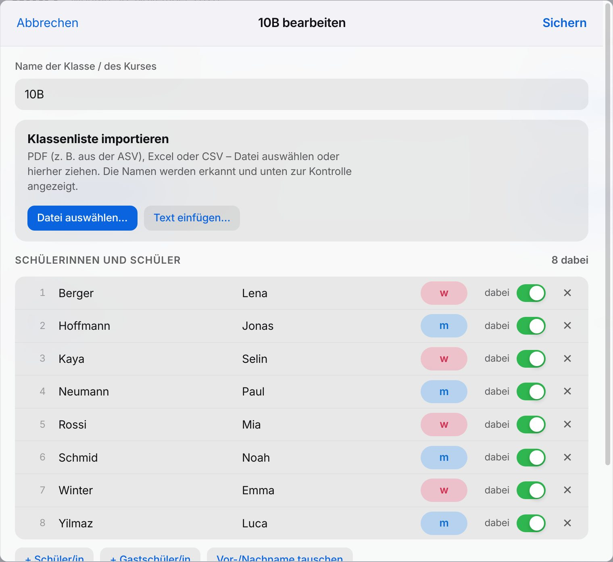
2Prüfung vorbereiten
2.1Prüfung anlegen
+ Neue Prüfung in der Leiste öffnet den Dialog. Diese Felder sind entscheidend:
- Fach, Jahrgangsstufe, Sprachenfolge: Daraus schlägt Voce das passende ISB-Raster vor (z. B. Italienisch als 3. Fremdsprache in Jgst. 9 → A2+). Die Sprachenfolge ist je Fach vorbelegt: Italienisch und Spanisch als 3. Fremdsprache, Französisch als 2. Fremdsprache, Russisch und Chinesisch mit eigener Zeile nach der GER-Übersicht des ISB. Du kannst den Vorschlag ändern.
- Sprache der Prüfungskarten: In dieser Sprache stehen die Beschriftungen der Karten für die Prüflinge; Voce stellt sie passend zum Fach ein. Die Sprache der Bewertungsbögen wählst du erst bei der Ausgabe (Standard: Deutsch).
- Grenze 4/5: Standard sind 50 % laut ISB; nach fachlichem Ermessen bis 60 %. Der Notenschlüssel steht direkt darunter. Tabelle, Worturteil und Bogen verwenden immer denselben Schlüssel.
- Ablauf: Datum, Beginn, Raum, Minuten je Gruppe, Wechselzeit und Pausenlänge ergeben den Zeitplan. Ein Hinweis für den Plan (z. B. „Bitte 10 Minuten vorher vor dem Raum warten“) erscheint auf dem Ausdruck.
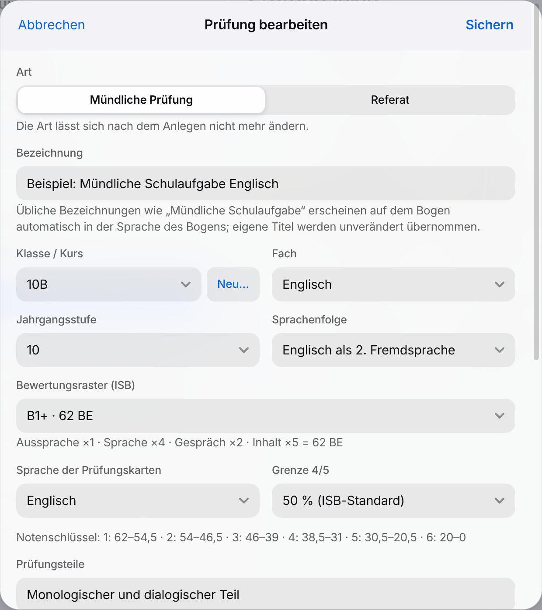
2.2Gruppen & Prüfungsplan
- Einteilen: Gruppengröße wählen (Einzeln, 2er, 3er, 4er) und Zufällig einteilen. Bleibt jemand übrig, entsteht eine größere Gruppe.
- Wunschgruppen: Namen auf eine andere Gruppe ziehen. Auf einen Namen gezogen, tauschen beide die Plätze. Alternativ einen Namen antippen und dann die Zielgruppe.
- Reihenfolge: Gruppen am Griff ⠿ ziehen oder mit ↑ ↓ verschieben. Ein blauer Strich zeigt, wo die Gruppe landet.
- Pausen: Zwischen zwei Gruppen steht + Pause einfügen. Die Pause erscheint als orange Leiste mit Uhrzeit. Die Länge änderst du mit − und + (5-Minuten-Schritte) oder per Klick auf die Zahl und Eintippen. Auch Pausen lassen sich ziehen; Entfernen nimmt sie heraus.
- Plan drucken … öffnet die Druckvorschau (siehe Drucken und Designs). Als Word liefert den Plan zum Weiterbearbeiten.
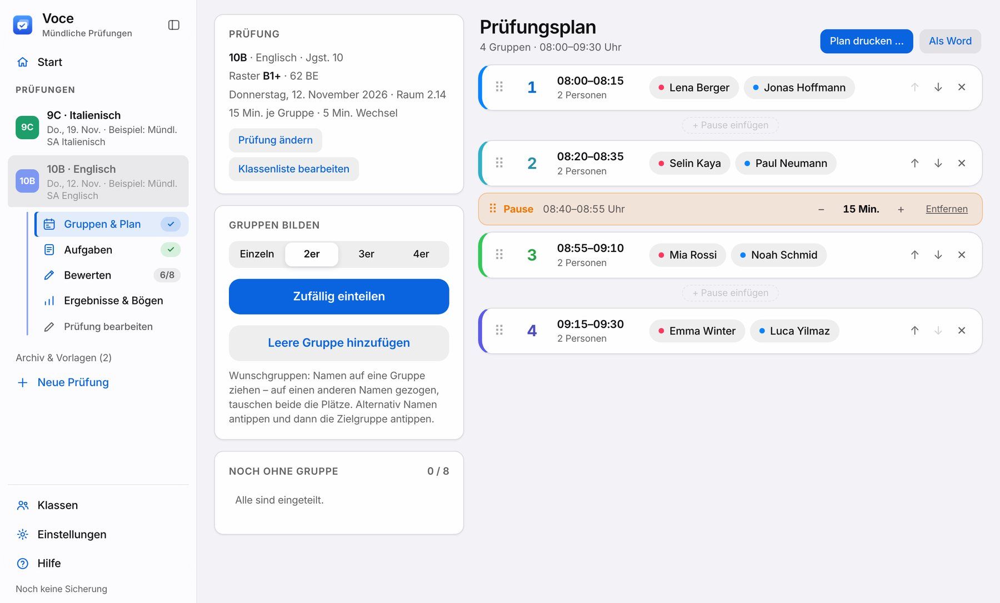
2.3Aufgaben & Prüfungskarten
Dieser Schritt ist freiwillig. Im Bereich Aufgaben entstehen die Karten für die Prüflinge: je Prüfling eine Karte (A, B, C, D) mit Monolog und Dialog, dazu ein Prüferblatt je Gruppe.
- Aufbau: Monolog und/oder Dialog einschalten, Dauer festlegen, Hinweis „Wörterbuch nicht erlaubt“ wählen und bestimmen, ob die Prüflinge zwischen bis zu vier Monolog-Themen wählen.
- Aufgaben anlegen: Mit + Aufgabe entstehen die Monolog- und Dialogaufgaben. Zeilen mit „- “ werden zu Aufzählungspunkten. Beim Monolog kannst du ein Bild einfügen (Knopf oder auf die Bildfläche ziehen), beim Dialog Situation und Rollenkarten. Erwartungen erscheinen nur auf dem Prüferblatt.
- Verteilen: Aufgaben automatisch verteilen teilt sie reihum auf. Unter „Zuordnung“ lässt sich jede Wahl ändern.
- Drucken: Karten für die Prüflinge … und Prüferblätter … öffnen die Druckvorschau. Die Karten erscheinen in der Sprache der Prüfung, das Prüferblatt auf Deutsch.
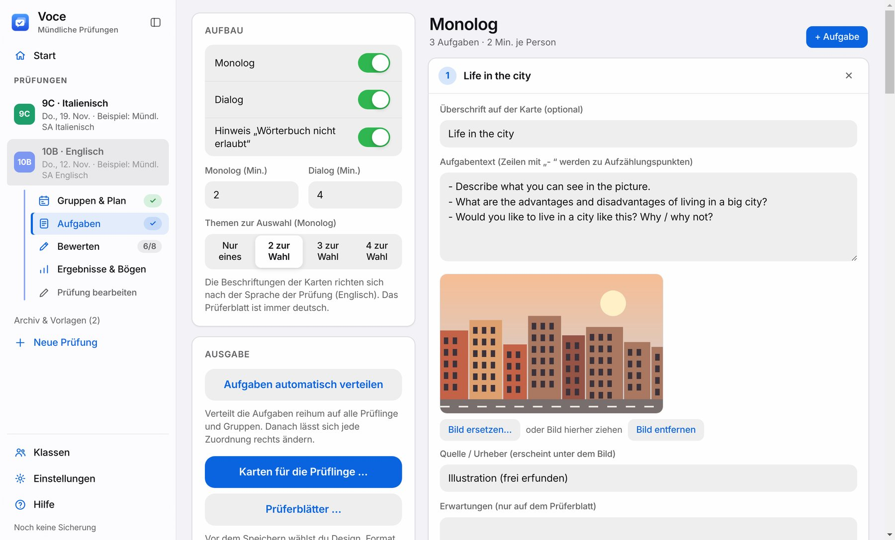
3Am Prüfungstag
3.1Bewerten
Links steht die Gruppenliste mit Status, rechts die aktuelle Gruppe mit allen Prüflingen nebeneinander. Am Prüfungstag öffnet Voce die Gruppe, die laut Plan gerade dran ist, und zeigt „Jetzt: Gruppe 2 – noch 8 Min.“ sowie die nächste Gruppe.
- Punkte antippen: je Bereich 0–6 BE (Inhalt 0–4 BE), +½ ergänzt einen halben Punkt. In der Oberstufe vergibst du Notenpunkte 0–15. Falsch angetippt? Noch einmal auf die gewählte Zahl tippen, dann sind die Punkte wieder leer.
- ISB-Beschreibung: Unter den Punkten steht die Beschreibung der gewählten Stufe, zur Kontrolle der Einstufung. Beschreibungen ausblenden schaltet sie für die ganze Gruppe aus.
- Notizen: Je Bereich gibt es ein Notizfeld. Notizen erscheinen auf dem Bogen als eigener Punkt beim jeweiligen Bereich, nicht im Worturteil. Mehr Platz? Ein Notizfeld unten rechts am Anfasser größer (oder kleiner) ziehen: Alle Notizfelder passen sich an, und Voce merkt sich die Höhe.
- Aussprache markieren … öffnet typische Laute und häufige Fehler (Englisch, Italienisch, Französisch, Spanisch). Die Auswahl übernimmt Voce beim Schließen in die Notiz, in der Sprache des Bogens.
- Typische Fehler markieren … beim Bereich Sprache öffnet häufige Fehler deutschsprachiger Lernender in Grammatik und Wortschatz, mit Beispiel und Korrektur (z. B. „since three years → for three years“). Voce zeigt die Fehler der eingestellten Lernstufe zuerst; die Auswahl kommt beim Schließen in die Notiz zur Sprache, in der Sprache des Bogens.
- fehlt markiert, wer nicht teilgenommen hat. Für diese Prüflinge legt Voce später auf Wunsch einen Nachtermin an.
- Timer oben mit Start/Pause. In den letzten zwei Minuten wird die Zeit orange, danach rot mit „+“. Scrollst du nach unten, bleibt die laufende Zeit unten rechts sichtbar; ein Klick darauf hält sie an. Vorherige / Nächste oder die Pfeiltasten ← → wechseln die Gruppe.
- Speichern: Voce speichert jede Eingabe sofort. Wer zur Sicherheit trotzdem speichern möchte: ⌘ S bzw. Strg S schreibt den Stand sofort und legt dabei eine Sicherung an.
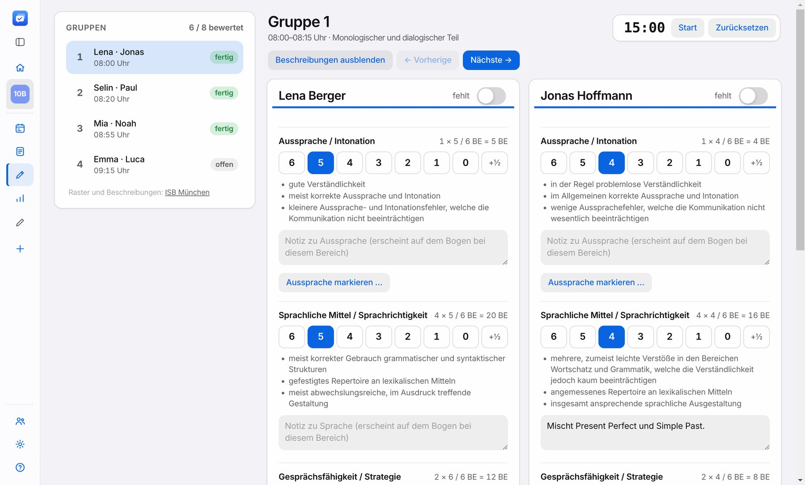
3.2Checkliste für den Prüfungstag
- Am Vortag einen Bewertungsbogen als Probe speichern: Logo, Schulname und Sprache prüfen.
- Prüfungsplan (Fassung Prüflinge) und Türaushang drucken, Lehrkraft-Fassung und Prüferblätter mitnehmen.
- Karten drucken; bei getrennten Monolog- und Dialogblättern die Reihenfolge beim Austeilen beachten.
- Laptop laden, Voce öffnen: Am Prüfungstag springt „Bewerten“ zur aktuellen Gruppe.
- Während der Prüfung nur Punkte antippen und kurze Notizen schreiben; Worturteile entstehen automatisch.
- Danach Worturteile kurz durchsehen, Bögen speichern und eine Sicherung anlegen.
4Ergebnisse und Ausdrucke
4.1Ergebnisse, Worturteile & Bögen
Ergebnisse & Bögen zeigt Notenspiegel, Durchschnitt und alle Prüflinge mit Punkten, Note und Worturteil.
- Worturteil öffnet den Text zum Prüfen und Ändern. Er entsteht aus den Punkten (in der dritten Person, in der Sprache des Bogens) und passt immer zur Note. Aus den Punkten neu erzeugen setzt einen geänderten Text zurück.
- „bitte prüfen“: Hast du ein Worturteil von Hand geändert und ändern sich danach Punkte oder Notenschlüssel, markiert Voce es. Vor dem Speichern der Bögen fragt Voce dann nach.
- Alle Bewertungsbögen als Word, direkt daneben die Sprache der Bögen (Standard: Deutsch; Englisch, Italienisch, Französisch oder Spanisch möglich – dann erscheinen Überschriften, Rasterbeschreibungen und das automatische Worturteil in dieser Sprache): eine Datei mit einer Seite pro Person, aufgebaut wie der ISB-Bogen, mit Schullogo und Quellenangabe des ISB. Bogen in einer Zeile erzeugt nur diesen einen.
- Übersicht für die Fachschaft … enthält Notenspiegel, Durchschnitt je Bereich und Notenschlüssel mit Anzahl je Note, wahlweise mit Notenliste.
- Noten kopieren legt „Name + Note“ in die Zwischenablage. Notenliste (CSV für Excel) enthält Punkte, BE und Noten.
- Nachtermin anlegen erscheint, wenn jemand gefehlt hat. Voce legt eine neue Prüfung mit denselben Einstellungen und Aufgaben an, nur für diese Personen.
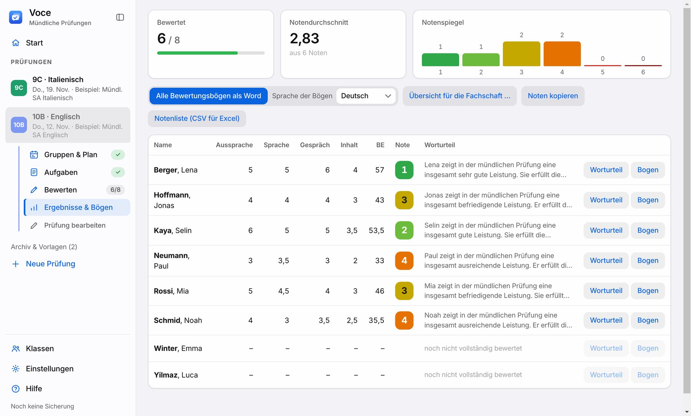
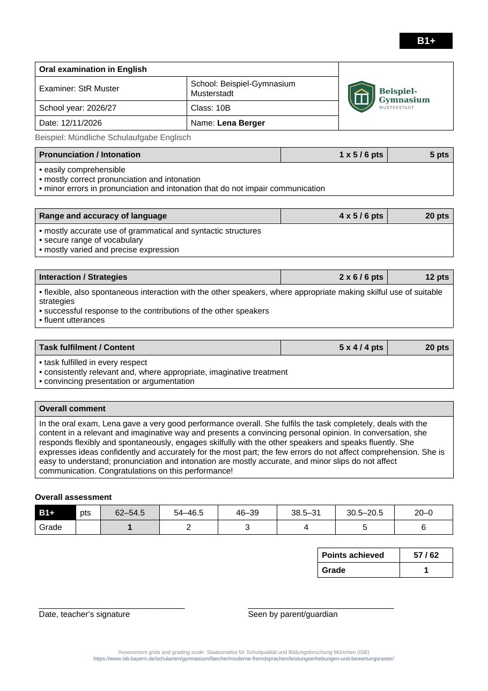
4.2Drucken und Designs
Prüfungsplan, Türaushang, Prüfungskarten, Prüferblätter und die Übersicht für die Fachschaft öffnen eine Druckvorschau. Links wählst du Design und Optionen, rechts siehst du sofort das Ergebnis. Unten stehen immer Drucken … (öffnet den Druckdialog deines Systems, Drucker und Anzahl wählst du dort) und PDF speichern. Voce merkt sich deine Wahl.
- Prüfungsplan: Fassung für die Prüflinge (ohne Aufgaben, zum Aushängen oder Verteilen) oder für die Lehrkraft (mit Aufgaben je Prüfling und Dialogrollen, deutlich gekennzeichnet).
- Türaushang: Zeiten in großer Schrift, wahlweise ohne Namen.
- Karten: A4 oder A5 (zwei Karten pro A4-Blatt, zum Halbieren), große Schrift, Monolog und Dialog wahlweise auf getrennten Blättern.
- Passt eine Seite nicht ganz, verkleinert Voce sie etwas, statt etwas abzuschneiden. Die Vorschau zeigt das an.
- Als Word (schlicht) liefert eine einfache Fassung zum Weiterbearbeiten.
- Dateinamen: Alle Dateien heißen nach demselben Muster, z. B. 2026-11-12 10B Englisch – Prüfungsplan.pdf oder … – Bewertungsbögen.docx. So stehen im Ordner alle Unterlagen einer Prüfung beieinander und nach Datum sortiert.
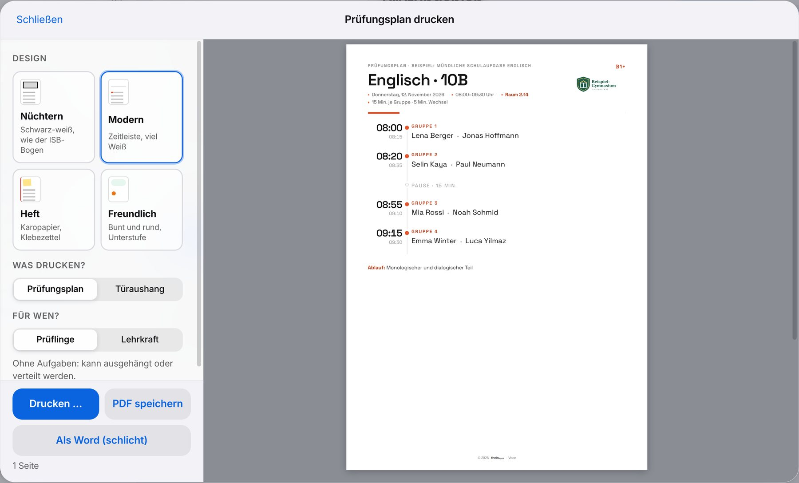
5Referate
5.1Referatsliste: anlegen und einteilen
Referate bewertest du mit den ISB-Rastern „Sprechen (monologisch)“ (A1 bis B1+). Sie stehen neben den Prüfungen; an deren Rastern, Notenschlüsseln und der GER-Zuordnung ändert sich nichts.
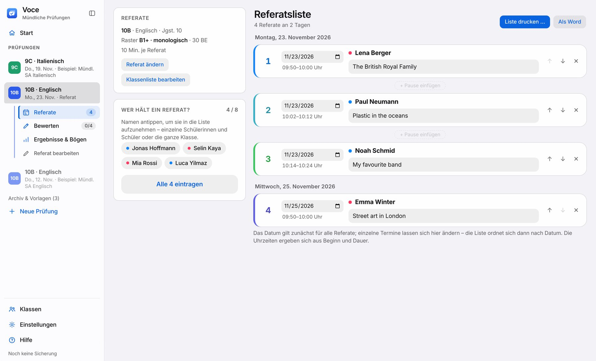
- Anlegen: auf „Start“ Neues Referat – oder Neue Prüfung und oben bei Art Referat wählen. Voce schlägt das monologische Raster passend zu Jahrgangsstufe und Sprachenfolge vor. Die Art lässt sich nach dem Anlegen nicht mehr ändern.
- Einzel- und Gruppenreferate: Ein Referat kann eine Person halten oder eine Gruppe. Beides darf in einer Liste gemischt vorkommen, Gruppen auch unterschiedlich groß. Bewertet wird jede Person einzeln.
- Einteilen: Links unter Noch ohne Referat wählst du Einzeln, 2er, 3er oder 4er und drückst Zufällig oder Der Reihe nach (Reihenfolge der Klassenliste). Voce teilt gleichmäßig ein: Die Gruppen sind so groß wie gewählt, übrige Personen kommen dazu (z. B. 25 in 3er → 7 × 3er und 1 × 4er). Vorher zeigt Voce, was entsteht. Was schon in der Liste steht, bleibt; neue Referate kommen ans Ende.
- Ziehen und Tauschen: Namen ziehst du mit der Maus auf ein anderes Referat, auf ＋ Neues Referat oder zurück nach links. Auf einen anderen Namen gezogen, tauschen beide. Ohne Maus: Namen antippen, dann das Ziel antippen. Am Griff ⠿ ziehst du ein ganzes Referat an eine andere Stelle; ↑ ↓ geht auch. Ein Referat, das dabei leer wird und noch kein Thema hat, verschwindet von selbst.
- Thema, Termin und Dauer: Das Thema gilt für das ganze Referat. Das Datum gilt zunächst für alle; einzelne Termine änderst du in der Zeile – die Liste ordnet sich nach Datum, und an jedem Tag beginnt die Zeit wieder beim Beginn. Die Dauer ergibt sich aus den Minuten je Person (bei „Referat ändern“) mal der Zahl der Personen; bei jedem Referat kannst du sie eigens eintragen (orange markiert, ↺ setzt sie zurück). Pausen fügst du zwischen zwei Referaten ein.
- Neu einteilen: Liste leeren … nimmt alle Referate aus der Liste. Vergebene Punkte bleiben gespeichert und sind wieder da, sobald die Person erneut eingetragen ist.
5.2Bewerten, Bögen und Oberstufe
- Bewerten: Bei einem Gruppenreferat stehen alle Mitglieder nebeneinander, der Timer läuft über die ganze Dauer. Drei Bereiche – Aussprache / Intonation / Flüssigkeit (×1), Sprachliche Mittel / Sprachrichtigkeit (×2) und Aufgabenerfüllung / Inhalt (×2, ab B1 ×3). Am Referatstag zeigt Voce, wer gerade dran ist.
- Bögen: wie bei Prüfungen – einer pro Person, mit Thema und Datum des Referats, bei Gruppenreferaten mit „Gruppenreferat mit …“ und den Namen der anderen (in der Sprache des Bogens). Überschrift „Referat – kleiner mündlicher Leistungsnachweis“.
- Referatsliste: Liste drucken … in den vier Designs oder Als Word – mit Datum, Uhrzeit, allen Namen und Thema.
- Tipp: Bei Gruppenreferaten lohnt es sich, im Hinweis auf der Referatsliste festzuhalten, dass jede Person einen eigenen Teil vorträgt – so ist die Einzelbewertung für alle nachvollziehbar.
- Oberstufe (Q12/13): Für Referate gibt es vom ISB kein eigenes Raster (die monologischen Raster reichen bis B1+). Voce verwendet deshalb – wie in der Praxis üblich – das Raster der mündlichen Schulaufgabe: sprachliche Leistung 40 %, Gesprächsfähigkeit 20 %, Inhalt 40 %, je 0–15 Notenpunkte (bei spät beginnenden Fremdsprachen das B1-Raster in Notenpunkten). Die Gesprächsfähigkeit bewertest du z. B. in der anschließenden Diskussion. Das Ergebnis steht direkt in Notenpunkten. Bitte mit der Fachschaft abstimmen. Für B2 in Jgst. 11 (Englisch) schlägt Voce B1+ (monologisch) vor.
6Einstellungen und Sicherheit
6.1Einstellungen
Die Einstellungen sind in Bereiche gegliedert; links wählst du den Bereich.
| Bereich | Was du dort einstellst |
|---|---|
| Aussehen | Fünf Farbwelten (Klar, Tageslicht, Laguna, Neon, Heft), Hell/Dunkel/Automatisch, sechs Schriften und die Größe der Oberfläche (z. B. „Groß“ am Beamer). Jeder Knopf zeigt die Schrift selbst. „Tageslicht“ ändert Farben und Helligkeit mit der Tageszeit. Gilt nur auf diesem Gerät, Ausdrucke bleiben gleich. |
| Schule & Bögen | Schule, Prüfer/in, Schuljahr und Schullogo (oben rechts auf Bögen und Plan); ISB-Beschreibungen auf dem Bogen; Unterschriftszeile für Erziehungsberechtigte. |
| Neue Prüfungen | Vorgaben für neue Prüfungen: Fach, Beginn, Gruppengröße, Minuten je Gruppe, Wechselzeit und Pause. Darunter, welches ISB-Raster Voce je Sprachenfolge und Jahrgangsstufe vorschlägt, vorbelegt nach der GER-Übersicht des ISB. |
| Worturteil mit KI | Freiwillig: Worturteile mit Claude, ChatGPT, Gemini oder lokal mit Ollama umformulieren lassen. Für Cloud-Anbieter ist ein API-Schlüssel nötig; ein normales Abo reicht nicht. |
| Sicherung & Updates | Sicherungsstand, zweiter Sicherungsordner, frühere Stände wiederherstellen, Abfrage neuer Versionen, alle Daten als Datei speichern oder einlesen. Den Hinweis auf eine neue Version blendet ✕ aus; er erscheint erst bei der nächsten Version wieder. |
| Hilfe & Info | Dieses Handbuch (auch als PDF), Quellenverzeichnis, Version und Lizenzen. |
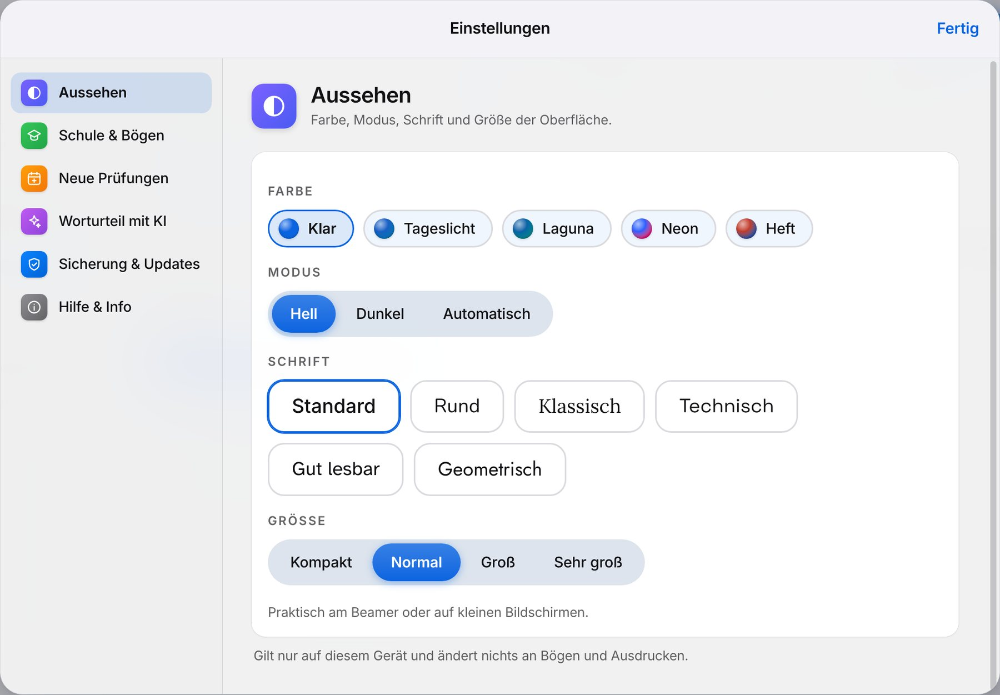
6.2Sicherung & Datenschutz
- Alle Daten liegen nur auf diesem Mac/PC und werden bei jeder Änderung gespeichert.
- Zusätzlich sichert Voce bei Änderungen etwa alle 15 Minuten und beim Beenden: die letzten 30 Stände und je einen Stand pro Tag.
- Mit Sicherungsordner wählen… legst du einen zweiten Ort fest (z. B. einen Cloud-Ordner oder USB-Stick); dann landet jede Sicherung zusätzlich dort.
- Frühere Sicherungen ansehen und wiederherstellen holt einen älteren Stand zurück. Auch Sicherung einlesen… sichert vorher automatisch den jetzigen Stand.
- Sicherungen im Finder/Explorer zeigen öffnet den Ordner mit allen automatischen Sicherungen.
- Sicherung speichern… (unter „Alle Daten als Datei“) legt eine einzelne Datei an, z. B. für den Umzug auf einen anderen Rechner.
6.3Tastenkürzel
| Aktion | Mac | Windows |
|---|---|---|
| Neue Prüfung | ⌘ N | Strg N |
| Klassen | ⌘ K | Strg K |
| Einstellungen | ⌘ , | Strg , |
| Handbuch | ⌘ ? | F1 |
| Speichern (mit Sicherung) | ⌘ S | Strg S |
| Alle Daten als Datei sichern | ⌘ ⇧ S | Strg Umschalt S |
| Größer / kleiner | ⌘ + / ⌘ − | Strg + / Strg − |
| Vorherige / nächste Gruppe (Bewerten) | ← → | ← → |
| Dialog schließen | Esc | Esc |
7Regeln, Quellen und Fragen
7.1Raster und Notenschlüssel
Bewertet wird in vier Bereichen mit je 6 BE (Inhalt 4 BE). Je nach Niveaustufe werden die Bereiche unterschiedlich gewichtet:
| Stufe | Aussprache | Sprachliche Mittel | Gespräch | Inhalt | Summe |
|---|---|---|---|---|---|
| A1 / A1+ | 2× | 4× | 1× | 3× | 54 BE |
| A2 / A2+ | 2× | 4× | 2× | 4× | 64 BE |
| B1 / B1+ | 1× | 4× | 2× | 5× | 62 BE |
| B1+/B2 | 1× | 4× | 2× | 6× | 66 BE |
Referate (Sprechen monologisch, drei Bereiche):
| Stufe | Aussprache / Flüssigkeit | Sprachliche Mittel | Inhalt | Summe | Notenschlüssel 1 · 2 · 3 · 4 · 5 · 6 |
|---|---|---|---|---|---|
| A1 bis A2+ | 1× | 2× | 2× | 26 BE | 26–23 · 22,5–19,5 · 19–16 · 15,5–13 · 12,5–8,5 · 8–0 |
| B1 / B1+ | 1× | 2× | 3× | 30 BE | 30–26,5 · 26–22,5 · 22–18,5 · 18–15 · 14,5–10 · 9,5–0 |
Die Notenschlüssel entsprechen den Rechentabellen des ISB. In der Oberstufe (12/13) zählen sprachliche Leistung 40 %, Gesprächsfähigkeit 20 % und Inhalt 40 %. Wird ein Bereich mit 0 Notenpunkten bewertet, sind insgesamt höchstens 03 Notenpunkte möglich.
Das Worturteil folgt den Beschreibungen des ISB für die gewählte Punktzahl und das jeweilige Raster: Bei A1 und A2 etwa spricht es vom Spektrum „der Lernstufe entsprechend“, in der Oberstufe nennt es bei der sprachlichen Leistung auch die Aussprache. Seine Gesamteinschätzung entspricht immer der berechneten Note, auch bei einer eigenen Grenze 4/5.
7.2Quellenverzeichnis
Voce stützt sich auf diese Raster, Rechentabellen und Vorgaben (Stand 21.11.2026). Alle Bewertungsraster, Rastertexte (Deskriptoren) und Notenschlüssel stammen vom Staatsinstitut für Schulqualität und Bildungsforschung München (ISB); Voce gibt sie wörtlich wieder, das ISB hat die Verwendung mit Quellenangabe und Link zur Fundstelle genehmigt. Bei jeder Quelle steht, wofür Voce sie nutzt, welcher Teil verwendet wird und wie genau er geprüft ist. Maßgeblich sind die Originaldateien des ISB.
ISB – Bewertungsraster Sprechen (dialogisch), mündliche Prüfungen
ISB – Bewertungsraster Sprechen (monologisch), Referate
ISB – Oberstufe und Notenpunkte
ISB – weitere Vorgaben
Genehmigung und rechtliche Hinweise
Eigene Verfahren und Inhalte von Voce (keine amtliche Vorgabe)
Software und Schriften
Die vollständigen Lizenztexte stehen in der App unter Einstellungen → Hilfe & Info → Lizenzen. Neuere Fassung oder Fehler entdeckt? Bitte an hallo@theisapps.de.
7.3Häufige Fragen
- Auf welchen Rechnern läuft Voce?
- Voce 2 läuft auf dem Mac ab macOS 13 Ventura (Apple-Chip oder Intel, etwa Macs ab 2017) und unter Windows 10 und 11 (64 Bit). Für ältere Macs mit macOS 11 oder 12 gibt es auf theisapps.de/voce weiterhin Voce 1.10.0. Die Daten passen in beide Versionen: Einstellungen → Sicherung & Updates → Sicherung speichern… bzw. Sicherung einlesen….
- Können Note und Worturteil auseinanderfallen?
- Nein. Note, Bogen, automatisches Worturteil und KI-Auftrag verwenden immer dasselbe Ergebnis – auch mit eigener Grenze 4/5. Hast du ein Worturteil von Hand geändert und danach Punkte geändert, markiert Voce es mit „bitte prüfen“ und fragt vor dem Speichern nach.
- Wie vergebe ich halbe Punkte?
- Ganze Punktzahl antippen, dann +½. Für die Beschreibung auf dem Bogen gilt die ganze Punktzahl (bei 4,5 also die Stufe 4). Ein zweites Tippen auf die gewählte Zahl löscht sie.
- Jemand hat gefehlt – was nun?
- Beim Bewerten „fehlt“ einschalten. Unter Ergebnisse & Bögen legt Nachtermin anlegen eine neue Prüfung nur mit diesen Personen an – mit denselben Einstellungen und Aufgaben (bei Referaten mit demselben Thema).
- Kann ich eine strengere Grenze als 50 % nehmen?
- Ja, unter Prüfung bearbeiten → Grenze 4/5 (50 bis 60 %). Voce rechnet den Notenschlüssel nach der ISB-Systematik um; Bogen und Worturteil passen sich an. In der Quellenangabe des Bogens steht dann „Notenschlüssel von der Lehrkraft angepasst“ mit der gewählten Grenze.
- Kann ich den Bogen auf Englisch, Italienisch, Französisch oder Spanisch ausgeben?
- Ja, mit „Sprache der Bögen“ neben Alle Bewertungsbögen als Word. Standard ist Deutsch. Die Übersetzungen der ISB-Beschreibungen sind inoffiziell.
- Gehen auch Gruppenreferate?
- Ja. In der Referatsliste ziehst du mehrere Namen auf ein Referat oder lässt mit „2er“, „3er“ oder „4er“ einteilen. Jede Person bekommt eigene Punkte, eine eigene Note und einen eigenen Bogen; die Dauer wächst mit der Zahl der Personen und lässt sich je Referat ändern.
- Gibt es Referat-Raster für die Oberstufe?
- Nein, das ISB bietet monologische Raster nur von A1 bis B1+ an. In Q12/13 verwendet Voce für Referate das Raster der mündlichen Schulaufgabe (Notenpunkte), so wie es in der Praxis üblich ist; im Dialog und in der Referatsliste steht dazu ein kurzer Hinweis. Für Englisch in Jgst. 11 (B2) schlägt Voce B1+ (monologisch) vor. Bitte jeweils mit der Fachschaft abstimmen.
- Wie ziehe ich auf einen neuen Mac/PC um?
- Einstellungen → Sicherung & Updates → Sicherung speichern …, die Datei auf das neue Gerät bringen und dort Sicherung einlesen … wählen.
- Übernimmt Voce Klassen aus anderen Apps?
- Ja: Klassendateien im gemeinsamen Austauschformat der theisapps-Apps (z. B. aus Aula) sowie Sicherungen aus Aula (früher Gruppo) liest Klassen → Klassen einlesen; Voce zeigt vorher, was sich ändert.
- Braucht Voce Internet?
- Nein. Nur die optionale KI-Formulierungshilfe und die Abfrage neuer Versionen gehen ins Internet; beides lässt sich abschalten.
- Darf ich Voce an meiner Schule einsetzen?
- Vor dem Einsatz bitte die Freigabe der Schulleitung einholen (§ 10 Abs. 4 S. 1 AGO), ggf. mit der/dem Datenschutzbeauftragten der Schule.